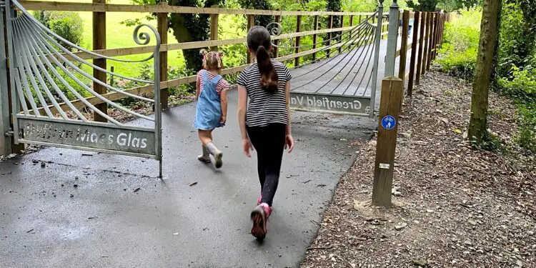

Days out

On a sunny day, the beach at TALACRE is hard to beat. For the not so sunny days why not try out something more adventourous such as;
Outpost Paintball - a brand new paintball experience, locatedbetween Chester and Wrexham. It is based in a Cold War Anti Aircraft Artillery installation built to protect Chester, Wirral and Liverpool from attack by nuclear bombers.
Bridlewood riding centre- a superbly equipped and beutifully suited centre which provides perfect riding opportunities for all the family.
Plantree Adventure - a high quality, planet-conscious adventure company that believes that exploring the planet helps you explore yourself. This can be done locally & globally, individually or in a group, in many different ways
Northtop Cricket Club - Founded in 1908, Northtop Cricket Club have developed over the years into on of the finest cricketing venues in North Wales.
Open link in a new window or tab: Things to do in north wales